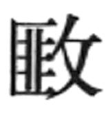

这是我国古代天文学发展的极重要时期。在先秦已经奠基的天文历法系统的基础上，这时在历法编制、仪器制造、宇宙理论及星图编制等方面，都取得长足的进步，形成了一个独特的和成熟的天文历法体系。
秦代行用古六历之一的颛顼历，到西汉初年仍沿用不改。由于颛顼历行用已久，据该历法推算的朔望日期与实际产生较大偏差，时有朔晦时见有新月的现象发生，所以要求改革历法的呼声渐高。汉武帝元封七年（前104）遂诏令改订新历。从制造仪器，进行实测、计算，到审核比较，最后从18家历法中选出邓平等人的八十一分律历为新定历法，即为太初历。太初历经西汉末年天文学家刘歆改造，遂成三统历（公元前7年），是为我国现存第一部完整的历法，［37］对后世历法影响深远，其主要进展有：［38］
其一，以实测历元为历算的起始点，定元封七年十一月甲子朔旦冬至夜半为历元，其实测精度比较高，如冬至时刻与理论值之差仅0.24日，而春秋战国时期冬至时刻测定的误差在2—3日之间。［39］
其二，太初历仍然以19年7闰为闰周，而对于19年中7个闰月的具体设置，首先发明了以不包含中气的月份定为闰月的方法。该法不但较好地调节了回归年和朔望月之间的关系，而且可以把冬至、大寒、雨水等12个中气与十一月、十二月、正月等月序一一对应起来，形成固定不变的关系，从而方便了生产季节的推算和应用。
其三，交食周期是指原先相继出现的日月交食又一次相继出现的时间间隔。食年是指太阳相继两次通过同一个黄白交点（指太阳视运动轨道与月亮运行轨道交点）的时间间隔。太初历首次引进这两个天文学概念，并定出明确的数据，它们是预报交食的最基本概念和数据，虽然其数值的误差还较大。
其四，太初历定出了新的五星会合周期，其精度都比战国时期有巨大的进步。此外，太初历还正确地建立了五星会合周期和五星恒星周期之间的数量关系。太初历定出的五星在一个会合周期内的动态表，是我国古代保存最早、最完整的动态表，它远比战国时期的相应动态表完备和准确。更重要的是，在五星会合周期的测定和五星动态表编制的基础上，太初历第一次明确规定了预推五星位置的方法：已知自历元到所求时日的时距，减去五星会合周期的若干整数倍，得一余数。以此余数为引数，由动态表用一次差内插法求得这时五星与太阳的赤道度距，即可知五星所处的位置。这一方法的出现，标志着人们对五星运动研究的重大飞跃。这一方法继续应用到隋代都没有什么大的变动。
太初历所采用的回归年和朔望月长度的精度反不如古四分历，这是该历的一个重大缺欠。
张衡（78—139），字平子，河南南阳人，是东汉时期杰出的科学家。他在天文学、数学、地震学、地图学以及文学、绘画等领域均成绩卓著。他曾先后两次任太史令，时达14年之久，所以在天文学上的贡献也最大。［40］
张衡曾对恒星进行了长期的观测与统计工作，他把星空共划分成444个星官，计得2500颗恒星，这一成果大大超过了石申夫、甘德的同类工作。他还观测出太阳和月亮的视直径均为半度，相当于360°制的29.6′，这与现代所测的太阳、月亮视直径已比较接近。
他也十分积极地参与当时关于历法问题的论争与研究。他极力主张用月行九道法（由月亮运动不均匀性的认识推导出来的月亮实际行度的计算法）来改进东汉四分历，以更准确地推算朔日的时刻。这一主张虽未被采纳，但这是试图用定朔法替代平朔法的一次早期努力。此外，张衡还创立了黄道宿度和赤道宿度两种不同坐标值之间相互换算的计算方法，初步解决了历法计算中一个相当重要的课题。这一方法后来被刘洪纳入乾象历中。
在天文学理论上，张衡多有建树，《灵宪》［41］一文可以说是这方面的专门论著。他认为，在阳光的照射下，地总是拖着一条长长的影子——暗虚，当日月相望并发生在黄白交点附近时，由于月体与暗虚相遇，自身不发光的月亮就要发生亏食现象，这是我国古代月食理论的经典性论述。张衡把日、月、五星在恒星间运动速度的快慢，同它们与天距离的远近联系起来考虑，认为其间关系为：“近天则迟，远天则速”，这反映了张衡关于日、月、五星与地球的距离有远有近的思想。他还对日、月出没与中天时视大小变化的现象进行过讨论。他以为，当日初出时，天空背景和观测者所处的周围环境都比较暗，所以看起来太阳的圆面就大些，而当日中时，则相反，这与“火当夜而扬光，在昼则不明”的道理是一样的。
关于宇宙的理论，张衡认为宇宙是在演化着的，其过程可分为三个不同的阶段：从只存在一切虚无的空间（“溟涬”阶段），到生成浑沌不分的元气（“庞鸿”阶段），到元气分离为阴阳二气，又由于刚柔、清浊、动静等物理因素的作用，和“自然相生”的事物内部机制，逐步形成天地万物（“天元”阶段）。在张衡看来，后一阶段都是前一阶段长期渐变的结果，前后两个阶段之间又是由突变的方式相衔接的。张衡的这一学说，是在先秦以来，特别是《淮南子·精神训》中所阐发的有关理论的基础上，所作的新概括和发展。另外，张衡还认为“宇之表无极，宙之端无穷”，这则是关于宇宙无限论的精辟论述。
张衡还是天文仪器制造大师。他是新型的计时仪器——补偿式漏壶的发明者。在张衡以前的漏壶，均存在漏水流速先快后慢的弊病，为此张衡设计了二级漏壶（上为A壶，下为B壶），A壶（称补偿壶）的水不断补充进入B壶，使得B壶的水位大致保持不变，也就使得由B壶流入起量度时间作用的箭壶的漏水流速基本恒定，从而提高了时间计量的准确度。张衡还创制了我国古代第一台自动的天文仪器——水运浑象，它以漏壶流出的较均匀的漏水为原动力，通过浑象内部装置的齿轮系等的传动和控制，自动地、每日大体均匀地驱动浑象绕天轴旋转一周，从而近似正确地演示有关天象，同时又可以形象地说明浑天说的正确性。关于张衡对浑天说的阐明，下面我们就要谈到。
盖天说、浑天说和宣夜说，是我国古代关于宇宙结构学说的三个主要流派，合称论天三家。它们都在汉代形成了成熟的学说。
西汉中期成书的《周髀算经》是盖天说的代表作，它把先秦时期主张“天圆如张盖，地方如棋局”的早期盖天说加以改造，提出了“天象盖笠，地法覆盘”等新的学说。其要点是：天和地均为拱形，天在上，地在下，天比地高出八万里。日月星辰均附着在天上，绕北天极平转，不会转到地下面去。太阳的出没与离人的远近相关，太阳离人远时，人的目力不及，表现为日没；近时，为人所见，表现为日出。太阳位置的四季变化，则是由于太阳运行的轨道四季不同而造成的，等等。《周髀算经》在论述这些问题时，应用了勾股定理和相当复杂的数学运算，赋予盖天说以数学化的形式，成为当时有影响的一个学派。但由于这一学说与一系列天文现象之间存在不可克服的矛盾，东汉以后日趋衰微。
浑天说经由西汉天文学家落下闳、鲜于妄人、耿寿昌和扬雄等人的努力，逐渐确立了自己的地位。到张衡推出《浑天仪注》［42］一文，成为浑天说的经典著作。该学说的要点为：天和地都是圆球形的，天在外，地在内，天比地大得多，天包裹着地，犹如鸡蛋壳包裹着蛋黄一般。日月星辰附丽于天球之上，天球以南北极为轴，每天自东向西绕轴旋转一周，天可以绕到地下面去，北极出地平的高度为36度。太阳沿黄道运行，黄道与天球赤道交成24度角，等等。这些论述能较好地解释许多天文现象，日渐得到广泛的传播。但是，张衡为了解决天地不坠不陷和稳定性问题，引进了天球表里有水，地载水而浮等观念，遂使浑天说在解释太阳绕地而行等问题时遇到理论上的困难，而且使关于地球的观念黯然失色。虽然如此，浑天说还是我国古代最重要和影响最大的一个学派。
对宣夜说进行系统总结和表述的是郗萌，他是与张衡同一时代的天文学家。宣夜说以为，天是无形无体、无色无质、无边无际的广袤空间，人目所见的浑圆的蓝天，仅是视觉上的错觉造成的，这如同“旁望远道之黄山而皆青，俯察千仞之谷而窈黑”是一个道理，实际上“青非真色，而黑非有体也”［43］。宣夜说还认为，日月五星的运动“迟疾任性”，“日月众星，自然浮生虚空之中，其行其止，皆须气焉”，即以为天体在广阔无垠的空间中的分布与运动是随其自然的，并不受想象中的天壳的约束，它们各具特性，并在气的作用下悬浮不动或运动不息。这样，宣夜说既否定了天壳的存在，又描绘了一幅天体在物质的无限空间自然分布与运动的图景，较盖天说和浑天说都更接近事物的本来面目。可是，该学说没有提供对天体运动规律的进一步说明，只是停留在思辨性论述的水平上，其影响远不及浑天说。
刘洪（约135—约210），字元卓，泰山蒙阴（今山东蒙阴县）人，是东汉后期著名的天文学家。
东汉伊始，天文学界一直十分活跃，关于天文历法的论争接连不断，在月亮运动、交食周期、冬至太阳所在宿度、历元等一系列问题上展开了广泛的探索，孕育着一场新的突破。在这种历史背景下，刘洪经过二十多年的潜心观测研究，终于在206年最后完成了他的乾象历，它的出现可视作这场长期论争的良好总结，是实现了新突破的标志。归纳起来，刘洪及其乾象历在如下九个方面取得了重大的进展：［44］
第一，刘洪发现以往各历法的回归年长度值均偏大，在乾象历中，他定出了365.2468日的新值，较为准确，从而结束了回归年长度测定精度长期徘徊以致倒退的局面，并开拓了后世该值研究的正确方向。
第二，他肯定了前人关于月亮运动不均匀性的认识，在重新测算的基础上，最早明确定出了月亮两次通过近地点的时距（近点月长度）为27.5534日的数值，并首创了对月亮运动不均匀进行改正计算的数值表（月离表），即月亮过近地点以后每隔一日月亮的实际行度与平均行度之差的数值表，为计算月亮的真实运行度数提供了切实可行的方法，亦为我国古代该论题的传统计算法奠定了基石。
第三，他指出月亮是沿自己特有的轨道（白道）运动的，白道与黄道之间的夹角约为六度，这同现今得到的测量结果已比较接近。他还定出了一个白道离黄道内外度的数值表，据此，可以计算任一时刻月亮距黄道南北的度数。
第四，他阐明了黄道与白道的交点在恒星背景中自东向西退行的新天文概念，并且定出了黄白交点每日退行的具体度值。
第五，他提出了新的交食周期值，据此可得一食年长度为346.6151日。该值比他的前人和同时代人所得值都要准确，其精度在当时世界上也是首屈一指的。
第六，他提出了食限的概念，指出在合朔或望时，只有当太阳与黄白交点的度距小于14°33′时，才可能发生日食或月食现象，这14°33′就称为食限，就是判断交食是否发生的明确而具体的数值界限。
第七，他创立了具体计算任一时刻月亮距黄白交点的度距和太阳所在位置的方法。这实际上已经解决了交食食分大小及交食亏起方位等的计算问题，可是乾象历对此并未加阐述。这类计算问题的明确记载则首见于杨伟的景初历（237）中。
第八，他发明有“消息术”，这是在计算交食发生时刻时，除考虑月亮运动不均匀性的影响外，还虑及交食发生在一年中的不同月份，必须加上不同的改正值的一种特殊方法，实际上已经考虑到太阳运动不均匀性对交食时刻影响的问题。
第九，刘洪还和蔡邕一起，共同完成了二十四节气太阳所在位置、黄道去极度、日影长度、昼夜时间长度以及昏旦中星的天文数据表的测算编纂工作，该表载于东汉四分历中，后来它成为我国古代历法的传统内容之一。
总之，刘洪提出了一系列天文新数据、新表格、新概念和新计算方法，把我国古代对太阳、月亮运动以及交食等的研究推向一个崭新的阶段。他的乾象历是我国古代历法体系趋于成熟的一个里程碑。
所谓岁差，是指春分点（或冬至点）在恒星间的位置逐年西移的天文现象。在公元前2世纪，希腊天文学家依巴谷已经发现春分点每百年沿黄道西退1°的现象，我国古代最早发现类似现象的是东晋天文学家虞喜，他在330年左右，对岁差现象作了与古希腊人在形式上迥异而实质相同的表述。
在虞喜之前，我国古代天文学家已经发现了冬至时太阳所在恒星间的位置发生变动的情况，但这未导致对岁差规律的探讨和总结。一直到虞喜才充分注意到实际上已为天文学界熟知的这一现象的重要天文学意义，并着手对岁差现象作数量化的论述。他由“日短星昴，以正仲冬”［45］句推知，昴星于尧帝时在冬至日黄昏时中天。再由实测，他得知，当时冬至日黄昏时昴星与子午方位的偏离度值。又考知自尧帝到其时的年距。最后虞喜算得每经50年冬至点沿赤道向西移动一度的数值，这就是我国古代经由特殊的途径独立地得到的第一个岁差值，虽然发现年代远迟于古希腊，但该值的精度已略优于依巴谷值，为岁差值的进一步探索开拓了新路。在此基础上，虞喜“使天为天，岁为岁”［46］，即把恒星年（太阳两次通过同一恒星的时间间隔）与回归年（太阳两次通过冬至点的时间间隔）两者区别开来，并为历法有关问题计算精度的提高准备了条件。
后秦天文学家姜岌约于380年发明了月食冲法，［47］其方法是在月食时测量月亮所在宿度，这时太阳正与月亮相差半周天度，于是能较准确地推知冬至时太阳所在宿度。这为后世岁差佳值的频频出现提供了切实有效的基本方法。
19年7闰的闰周前后沿用达千年之久，到北凉赵的元始历（412）才出现了转机，赵给出了600年221闰的新闰周，［48］这是他对回归年和朔望月长度认识深化的结果，即他对于回归年长度应小于365.2468日，和朔望月长度应在29.5306日左右均深信不疑，而这两个天文数值绝非19年7闰法所能协调，所以只有改革旧闰周，方可符合他已经确认无疑的如上事实，别无出路。当然要迈出这一步仍需极大的勇气。元始历所取回归年长度的精度较前代历法有大幅度的提高，赵对闰周的改革正与此相辅相成，是一大胆的和明智的创举。自此以后，新闰周辈出，呈现了不断求索、改进的可喜局面。
由于汉以来观测仪器的日渐改善，促进了恒星位置观测工作的开展，又由于天文学自身和占星术等的需要，厘定一个相对完整的全天星官系统，绘制比较完善的星表和星图，成为一种社会的需求。三国时期吴国太史令陈卓出色地完成了这项任务。他整理、汇总当时流行的甘氏、石氏和巫咸氏三家星官，并同存异，总结出283星官、1465颗恒星的全天星官系统，［49］并绘成星图，奠定了我国古代星官系统的传统模式。
刘宋时，钱乐之在元嘉十三年（436）和十六年（440）两次铸造浑象，采用的就是陈卓的星官系统。隋代丹元子著《步天歌》，［50］以诗歌的形式介绍陈卓星官系统，因易于记诵，遂广为流传。《步天歌》还把全部天空分作31个大区，即所谓三垣（紫微垣、太微垣和天市垣）二十八宿分区法。这一分区法和陈卓星官系统都一直沿用到近代，是我国古代天文学别具一格的又一表征。
在这里，我们还要顺便提一下这一时期在天象记录方面的两个特点：一是，各种天象的记录趋于齐备，除前述已有的天象记录外，还出现了明确的太阳黑子和超新星记录。如汉成帝河平元年（前28年）“三月乙（己）未，日出黄，有黑气大如钱，居日中央”［51］，对太阳黑子出现的时间、形象、大小和位置等均作了明确的记录。又如汉灵帝“中平二年（185）十月癸亥，客星出南门中，大如半筵，五色喜怒，稍小，至后年六月消”［52］，这是世界上最早的超新星记录。二是，天象记录日趋详尽、精细。如对日食的观测，不但有日期的记载，而且开始注意了食分、方位、亏起方位及初亏和复圆时刻等的描述。关于彗星记事，对于彗星运行路线、视行快慢以及相应的时间，都用生动而又简洁的文字加以描绘。这些表明古老的天象记录的传统不但相继不辍，而且在这时已经具备了成熟的形态。